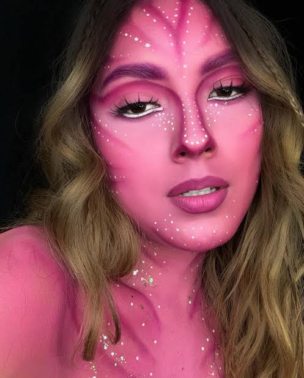

Maquiagem Artística
Uma maquiagem criativa, com cores, desenhos e detalhes especiais.
Ver passo a passoDúvidas Frequentes
1. Qual é a ordem correta da maquiagem?
Comece pela preparação da pele, depois aplique primer, base, corretivo e finalize a maquiagem.
2. Preciso hidratar a pele antes da maquiagem?
Sim! A hidratação ajuda a preparar a pele antes da maquiagem.
3. Como fazer a maquiagem durar mais?
Prepare a pele adequadamente e utilize produtos de finalização apropriados.
4. Como limpar os pincéis?
Lave regularmente e deixe secar completamente.